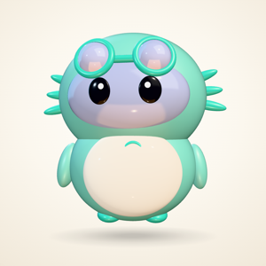
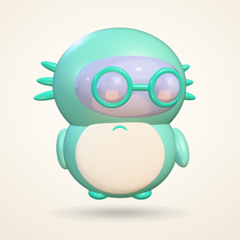
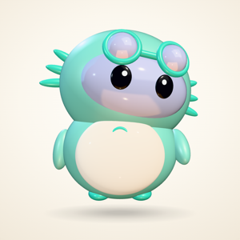
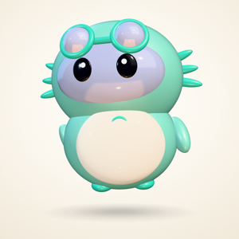
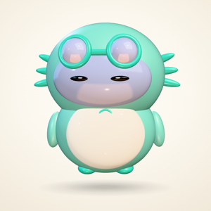

Agent skill · MIT · v1.0.1
Give your project a mascot
that feels alive.
It breathes, blinks and changes mood as your app changes state. Five moods, one word to set them — measured and checked before you ever see it.
Axo — the mascot built for DayPilot. It moves with real weight — settles, overshoots, breathes.
How it works
Three steps, and the third one is a word.
-
01
Add the skill
It lives beside your coding agent, ready whenever you want a character in the product.
npx skills add Ravinder82/FlyMascots -
02
Bring a mascot
An idea in a sentence, an image you like, or a MascotForge export. The skill builds it into a real, jointed character.
idea · image · export -
03
Say the word
Your app sets one of five words — idle, working, think, celebrate, sleep — and the mascot does the rest, in any of five homes.
setMood("working")
The five moods
Five faces. One word each.





The film
The whole thing, in twenty-four seconds.
It loops. No sound, nothing to turn down. The 34-second story cut and vertical versions live in the repo →
Where it lives
It ships where your app lives.
- WebsiteThree.js, in the page — the stage above
- macOS & iOSSceneKit — how Axo ships
- React NativeExpo apps, same five words
- Static pagesblogs and docs, one file
- Electrondesktop apps, same engine
Verified every run
It checks itself before you see it.
Not “looks right to me.” Every run ends with the numbers below asserted, and every one of sixty mood changes checked for a body that holds together.
Read the numbers yourself:
skills/flymascots/references/verification.md
Every run
It leaves a diagram behind.
Open it in a browser and follow what the run did, step by step — the same page you are on right now can be that diagram.

Install
One command, then say hello.
npx skills add Ravinder82/FlyMascots
npm i flymascots
MIT · v1.0.1 · the package carries the skill, the pipeline diagram and this README
Questions
Fair questions, straight answers.
Is the mascot above a video?
No — it is the real viewer running in this page, in 3D, answering your clicks. The only video on this page is the twenty-four second film.
Do I have to draw anything?
No. Start from a sentence, an image you already have, or a MascotForge export. The skill builds the character, the poses and the motion.
What does it cost?
Nothing. MIT, both the skill and the package — read it, change it, ship it.
How do I know it actually works?
Every run asserts the pose numbers above, checks all sixty mood changes for a body that holds together, and leaves you a diagram of exactly what happened.
What is the mascot on this page?
Axo — built with this skill for DayPilot, a macOS app. Everything you see here comes from that build: the stills, the film, the numbers.